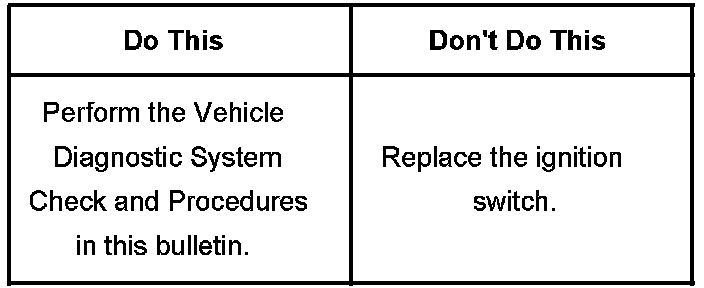
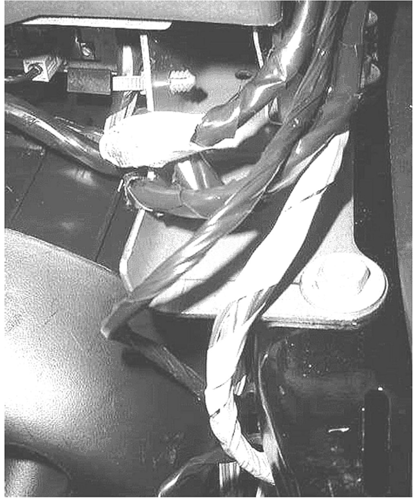
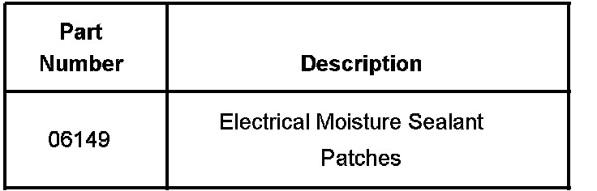
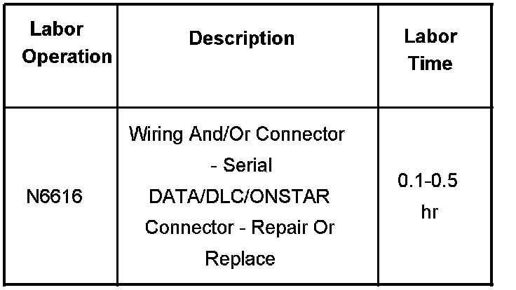

Electrical - Ignition Switch Diagnostic Tips
Bulletin No.: 06-08-45-010Date: November 17, 2006
INFORMATION
Subject:
Ignition Switch Diagnostic Tips - DTC Codes C0561, P1629, P1682, U0101, U0121, U0155 and/or No Crank/No Start, HVAC, Radio, On-Star, Power Adjustable Pedals, and Other Electrical Components Inoperative
Models:
2007 Cadillac Escalade, Escalade ESV, Escalade EXT
2007 Chevrolet Avalanche, Silverado, Suburban, Tahoe
2007 GMC Sierra, Yukon, Yukon XL

Attention:
This bulletin contains diagnostic information on the ignition switch and the GM LAN data lines. As these components and systems interact, it is possible to confuse one concern for another. Please read this entire bulletin before attempting repairs.
Section 1: Ignition Switch Concerns - Diagnostic Checks
If you encounter a no start/no crank concern and suspect an ignition switch fault, be sure to complete the Vehicle Diagnostic System Check as found in SI Document # 1741927. Be sure to check the power mode parameters in the BCM data display list in all ignition positions (Refer to the table in the SI document).
If any of the values read with the Tech 2(R) Diagnostic Scan Tool DO NOT match the values provided in the table, refer to "Power Mode Mismatch" (Document ID # 1740479). You will find the relevant Connector End Views and pin numbers in Document # 1740458. Complete an ignition component test. Check the resistance between the pins of the ignition switch (in all key positions) against the values provided in the resistance test table.
DO NOT replace the ignition switch unless SI Diagnostics directs you to do so AND you have completed the checks below.
Section 2: Checking for An Electrical Ground Out on the GM LAN
The type of customer concerns above may result from loss of the data stream on the GM LAN. One such cause is a short or grounding out of one of the data lines. Please follow the procedure below.
Procedure
Remove the right side front passenger lower kick panel trim. You will have to lift the front edge of the sill molding to facilitate kick panel removal.

Refer to the photo and locate the bright green tape wrapped wire loom.
Inspect the wires where they cross the edge of the metal lower instrument panel (IP) mount as shown.
If any of the wires insulation has been worn away, splice and repair the wire per GM Service Electrical Repair Guidelines as found in SI.
If any wear was noted (that required repair or not), a good way to protect the wires is by wrapping a 3M(TM) Electrical Moisture Sealant Patch, or equivalent mastic material, around the wire loom. This will create space from the lower IP bracket as well as protect the wires.
Replace the lower kick panel trim.
If no fault was found on the right side, repeat the above steps on the left side of the vehicle. On the left side, the wires to check are the GRAY tape wrapped wire loom.

Parts Information
Parts are available through 3M at 1-800-364-3577.
Warranty Information

For vehicles repaired under the New Vehicle Warranty, please submit your claim, using the table.

Disclaimer